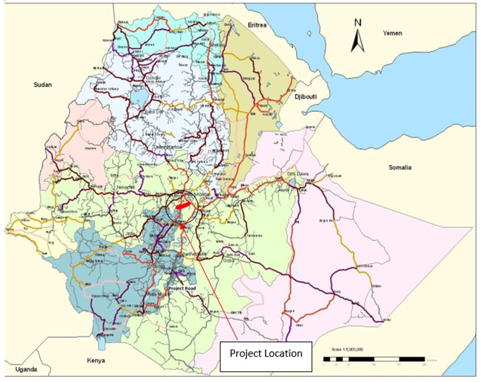
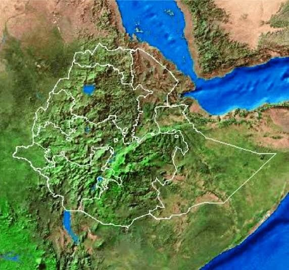
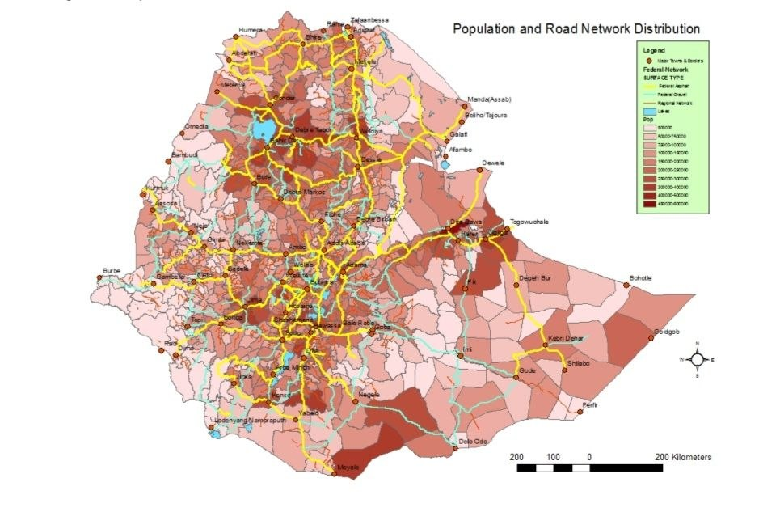
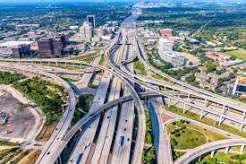
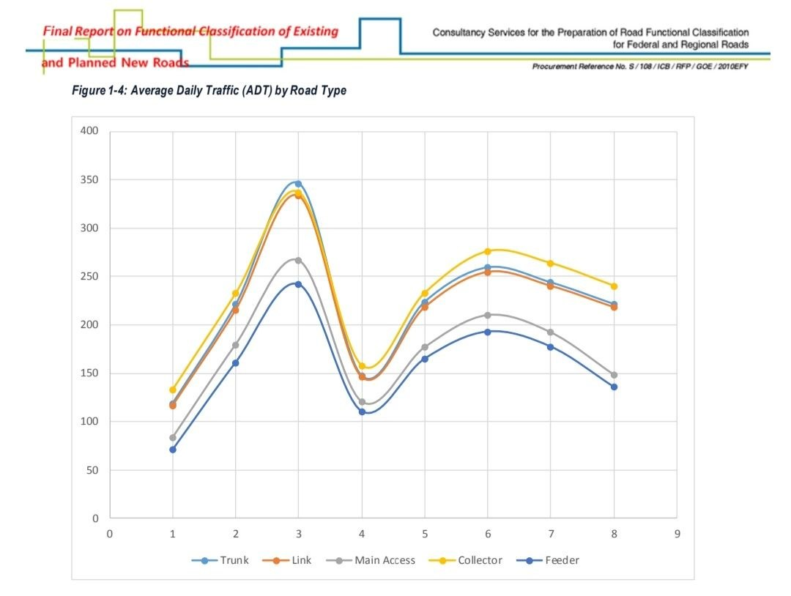
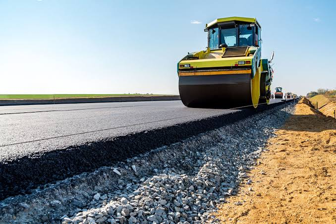
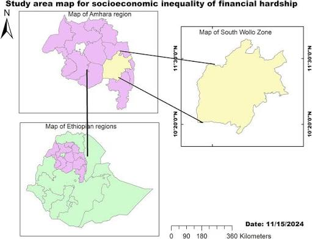

Our Areas of Expertise
Explore our professional consultancy services and discover how our technical expertise can support your organization and projects.
1. Geographic Information Systems (GIS)

We provide GIS solutions for collecting, managing, analyzing, and visualizing geographic information to support informed decision-making.
- GIS database development and management
- Spatial data analysis
- Digital mapping and visualization
- Enterprise Geodatabase development
2. Remote Sensing

We use satellite imagery and remote sensing technologies to collect and analyze information about the Earth's surface and environment.
- Satellite image processing
- Land use and land cover analysis
- Environmental monitoring
- Geospatial image interpretation
3. Mapping and Land Surveying

We provide mapping and surveying services to support infrastructure development, construction, and land management.
- Topographic surveying
- Land mapping
- Spatial data collection
- Digital map production
4. Transportation Engineering

We provide transportation engineering consultancy services focused on improving transportation systems and infrastructure.
- Transportation planning
- Road network analysis
- Transportation corridor studies
- Infrastructure planning
5. Traffic Analysis and Studies

We conduct traffic studies and analysis to understand transportation patterns and support effective traffic management.
- Traffic volume counts
- Origin-Destination (OD) surveys
- Speed surveys
- Boarding and alighting surveys
6. Road Design and Planning

We support road infrastructure development through engineering studies, geometric road design, and spatial analysis.
- Geometric road design
- Road corridor mapping
- Right-of-Way (RoW) analysis
- Road infrastructure planning
7. Socioeconomic Studies

We conduct socioeconomic studies to understand communities, population characteristics, and development needs.
- Socioeconomic data collection
- Community surveys
- Population analysis
- Socioeconomic research
Need Our Consultancy Services?
Are you planning a GIS, mapping, transportation, or engineering project? Contact our team to discuss your requirements.
Book a Consultation